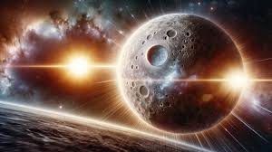

Merkurius adalah planet terdekat dengan Matahari dan planet terkecil di tata surya kita. Dengan diameter sekitar 4.880 kilometer, Merkurius memiliki permukaan yang sangat berbatu dan penuh dengan kawah akibat tumbukan meteorit. Meskipun tidak memiliki atmosfer tebal seperti Bumi, Merkurius tetap memiliki perubahan suhu yang ekstrem, dengan suhu yang sangat panas (hingga 430°C) di siang hari dan sangat dingin (hingga -180°C) di malam hari. Karena kedekatannya dengan Matahari, Merkurius memiliki peran penting dalam memahami proses-proses fisik di daerah paling dalam tata surya. Karena tidak ada atmosfer yang signifikan, permukaan Merkurius sangat rentan terhadap radiasi Matahari dan meteor. Selain itu, kecepatan revolusi Merkurius sangat cepat, hanya membutuhkan sekitar 88 hari Bumi untuk mengorbit Matahari sekali.
Fakta unik tentang Merkurius adalah bahwa meskipun berada sangat dekat dengan Matahari, planet ini tidak memiliki atmosfer yang cukup tebal untuk menahan panas Matahari. Sebaliknya, permukaan planet ini bisa sangat dingin pada malam hari. Merkurius juga memiliki orbit yang sangat elips, membuat jaraknya dari Matahari bervariasi cukup signifikan selama setiap revolusinya. Selain itu, Merkurius memiliki periode rotasi yang sangat lambat. Satu rotasi Merkurius (satu hari di planet ini) memakan waktu sekitar 59 hari Bumi, sementara satu tahun (satu revolusi Merkurius mengelilingi Matahari) hanya memerlukan 88 hari Bumi. Hal ini berarti satu hari Merkurius lebih lama daripada satu tahun di planet tersebut!
Untuk informasi lebih lengkap tentang merkurius silahkan kunjungi Wikipedia